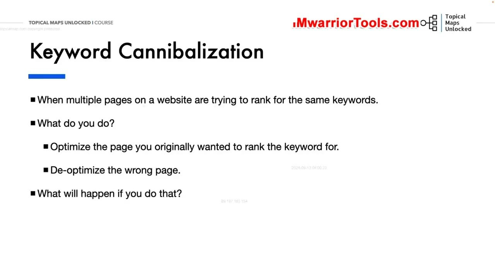
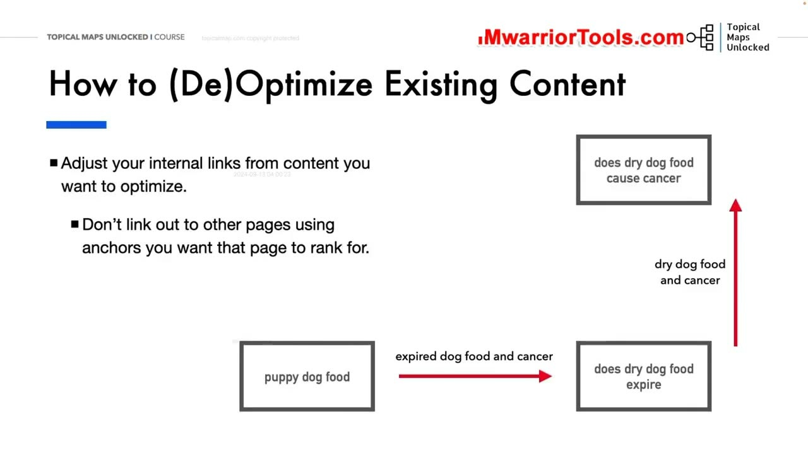
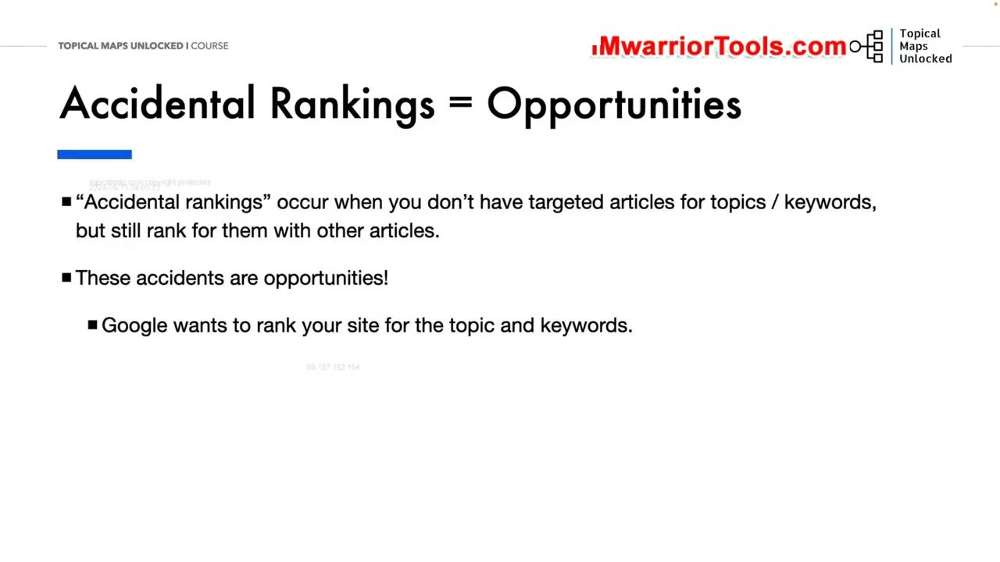
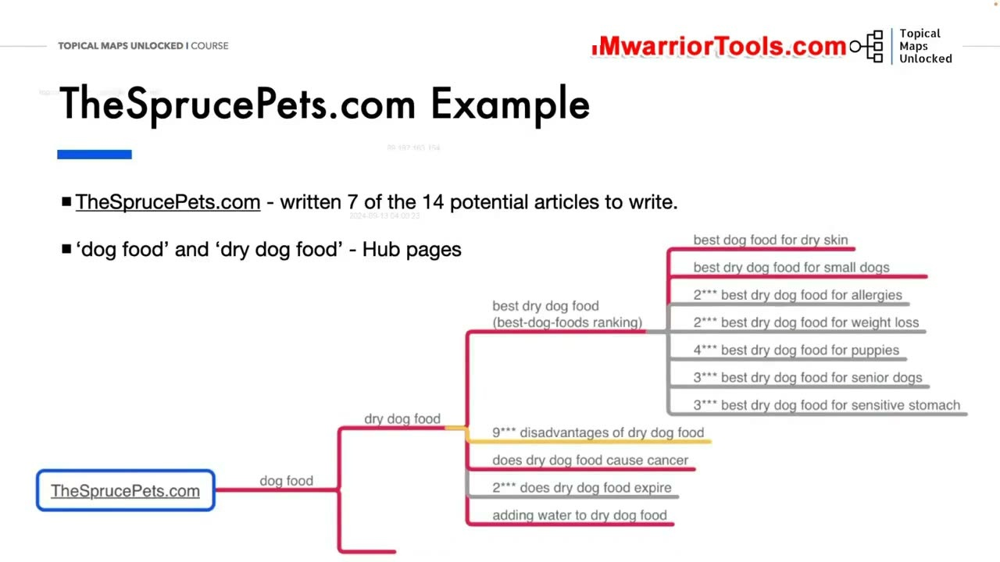

Cannibalization, Pruning, and Updating Content
1. Hiện tượng ăn thịt từ khóa (Keyword Cannibalization) và Cách thức xử lý
Bài học cuối cùng của Học phần 08 giải quyết những bài toán hóc búa nhất trong quá trình vận hành website dài hạn: Ăn thịt từ khóa (Cannibalization), Cắt tỉa nội dung rác (Pruning) và Cập nhật bài viết cũ (Updating).
Keyword Cannibalization (Hiện tượng ăn thịt từ khóa) xảy ra khi trên website của bạn có từ hai trang bài viết trở lên cùng nhắm vào một từ khóa hoặc cùng một ý định tìm kiếm. Hậu quả là Google bị bối rối không biết nên xếp hạng trang nào, dẫn đến việc cả hai trang đều bị tụt hạng hoặc nhảy nhót thứ hạng liên tục ngoài Top 20.
Quy trình giải quyết chuẩn xác của Yoyao:
- Xác định đâu là trang bài viết chính mà bạn thực sự mong muốn xếp hạng cho từ khóa đó.
- Tối ưu hóa mạnh mẽ trang đúng (Optimize the right page): Bổ sung từ khóa, thực thể và làm phong phú nội dung của trang mục tiêu.
- Hạ tối ưu hóa trang sai (De-optimize the wrong page): Thay đổi tiêu đề, các thẻ H2/H3 của bài viết sai để nó chuyển sang một góc nhìn ngách khác. Đặc biệt, hãy điều chỉnh lại các liên kết nội bộ: Không dùng từ khóa mục tiêu để trỏ về trang sai nữa, mà hãy đặt một liên kết từ trang sai trỏ ngược về trang đúng!
- Nếu trang sai quá mỏng hoặc không mang lại giá trị: Hãy sáp nhập (merge) nội dung của nó vào trang đúng và thiết lập lệnh chuyển hướng 301 Redirect vĩnh viễn.
Việc xử lý triệt để hiện tượng ăn thịt từ khóa sẽ ngay lập tức giải phóng sức mạnh tiềm ẩn của website, giúp trang đúng nhanh chóng bứt phá lên Top đầu.
Điều quan trọng là bạn phải theo dõi chặt chẽ dữ liệu thứ hạng sau khi thực hiện điều chỉnh để đánh giá phản ứng của Google và có những tinh chỉnh kịp thời.

2. Cách thức (Hạ) Tối ưu hóa nội dung dựa trên Bảng tính Topical Map
Bảng tính Topical Map tiếp tục đóng vai trò là kim chỉ nam giúp bạn thực hiện quá trình (De)Optimize (Tối ưu hoặc Hạ tối ưu) một cách chính xác tuyệt đối:
Nó cung cấp một cái nhìn toàn cảnh về cách các chủ đề và từ khóa được phân bổ, giúp bạn tránh được những quyết định cảm tính khi sửa đổi nội dung bài viết.
- Bạn mở bảng tính Topical Map và đối chiếu cụm từ khóa của từng trang bài viết.
- Điều chỉnh nội dung và mật độ từ khóa của trang bài viết sao cho bám sát 100% các từ khóa được phân bổ riêng cho trang đó trong cụm, loại bỏ các từ khóa bị lấn sân sang phạm vi của trang khác.
- Điều chỉnh lại hệ thống neo văn bản (anchor text) của các liên kết nội bộ trỏ đến các bài viết đó để tái định vị chính xác ngữ cảnh chuyên môn cho từng URL.
Khi các bài viết được tối ưu hóa chuẩn mực và phân định ranh giới rành mạch theo đúng Topical Map, bạn sẽ nhìn thấy thứ hạng của toàn bộ website tăng trưởng đồng loạt một cách vững chắc và trật tự.
Điều này cũng ngăn ngừa tối đa nguy cơ các bài viết mới xuất bản vô tình ăn thịt thứ hạng của các bài viết cũ đã có vị trí cao trên Google, giữ cho toàn bộ cấu trúc nội dung luôn hoạt động trơn tru.

3. Biến Thứ hạng vô tình (Accidental Rankings) thành Cơ hội vàng để bứt phá
Trong quá trình theo dõi hiệu suất website, bạn sẽ thường xuyên bắt gặp hiện tượng Accidental Rankings (Thứ hạng vô tình):
Đây là những từ khóa hoặc chủ đề mà bạn chưa từng chủ ý viết một bài viết riêng biệt nào để nhắm tới, nhưng Google vẫn vô tình xếp hạng một bài viết liên quan của bạn ở trang 2 hoặc trang 3 (Top 11–30).
Yoyao nhấn mạnh: Những thứ hạng vô tình này chính là Cơ hội vàng mười (Golden Opportunities)! Điều đó chứng tỏ Google đã bắt đầu nhận diện website của bạn có thẩm quyền trong ngách đó và thuật toán đang thực sự "muốn" xếp hạng website của bạn. Việc của bạn lúc này vô cùng đơn giản: Hãy chiều lòng Google bằng cách sản xuất ngay một bài viết chuyên sâu mới nhắm trúng đích từ khóa đó! Ngay khi bài viết mới được xuất bản và liên kết nội bộ, nó sẽ lập tức nhảy vọt thẳng vào Top 5 kết quả tìm kiếm.
Đừng bao giờ bỏ qua những tín hiệu quý giá này trong Google Search Console, vì đó là con đường ngắn nhất để gia tăng lưu lượng truy cập chất lượng cao.

4. Nghiên cứu ca điển hình TheSprucePets.com: Lấp đầy khoảng trống để thống trị ngách
Để minh chứng cho sức mạnh của việc lấp đầy khoảng trống và xử lý thứ hạng vô tình, Yoyao phân tích website khổng lồ hàng đầu thế giới về thú cưng: TheSprucePets.com (với hơn 5.510 trang được Google lập chỉ mục):
- Khi phân tích cụm chủ đề về Thức ăn cho chó (Dog Food), TheSprucePets đã viết được 7 bài trên tổng số 14 bài viết tiềm năng của cụm.
- Có 2 bài viết về ngách dị ứng và thức ăn khô cho chó mà TheSprucePets chưa từng viết riêng, nhưng tên miền của họ vẫn vô tình xếp hạng trang 2.
- Yoyao chỉ ra rằng: Nếu TheSprucePets chỉ cần viết thêm 2 bài viết này để lấp đầy khoảng trống của Silo, hai bài viết đó sẽ ngay lập tức chiếm lĩnh vị trí số 1 Google chỉ sau vài ngày nhờ nền tảng thẩm quyền tên miền sẵn có!
Đây chính là bài học vô giá cho mọi nhà quản trị website: Luôn kiểm toán định kỳ, cắt tỉa các bài viết rác lỗi thời, cập nhật bài viết cũ và nhanh chóng lấp đầy các khoảng trống chủ đề để duy trì vị thế dẫn đầu tuyệt đối trên thương trường số.
Một chiến lược nội dung chủ động và có kỷ luật sẽ bảo đảm website của bạn luôn phát triển bền vững và không ngừng gia tăng khoảng cách với mọi đối thủ cạnh tranh.
Khi mọi bài viết đều có vị trí và vai trò rõ ràng trên bản đồ chủ đề, website của bạn sẽ hoạt động như một cỗ máy thu hút lưu lượng tìm kiếm tự nhiên mạnh mẽ và bền bỉ qua năm tháng.

Nguồn và đối chiếu
- Topical Maps Unlocked 2.0 · 06-Cannibalization, Pruning, and Updating Content (Video bài học chính).
- Đối chiếu ngữ nghĩa với bản tiếng Anh: Bản Tiếng Anh/08-Content Creation Module/06-Cannibalization, Pruning, and Updating Content.mp4.